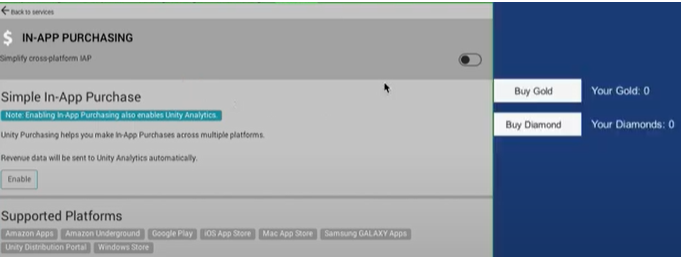

Note: Screenshots and menu choices might differ between release versions.
Overview
This document explains how to activate In-App Purchasing (IAP).
The Unity IAPAbbreviation of Unity In App Purchase See in Glossary package provides coded and codeless approaches that you set up to:
- Allow users to buy items in your games.
- Connect to stores so that you can obtain revenue from these purchases.
Here is an overview of the steps:
Define your In-app purchase strategy for this game.
Setup your project as a Unity service.
Activate IAP to automatically install the package.
Configure settings.
Create and catalog your the in-game items that you want to sell.
Use the Codeless IAP button to give users a way to buy items. Then, once you have the logic working, consider customizing the button look and feel. Or use the scripted IAP for a rich API to enhance this process.

Connect your app to the relevant app-stores, such as Google, Apple, or Android.
Add items to the stores.
Put it all together:
Configure your IAP using guidance from this doc, support, and the IAP forum.
Test everything.
Make it live.
You can also do many of these steps, or fine-tune what you create, with the In-App Purchasing API.
Note: Versions of Unity IAP between 4.2.0 and 4.6.0 automatically install Unity AnalyticsAbbreviation of Unity Analytics See in Glossary. Unity AnalyticsA data platform that provides analytics for your Unity game. More info See in Glossary is a paid service, and if your usage exceeds the free tier limits, you will be responsible for paying for your usage. To avoid using Unity Analytics, install Unity IAP 4.7.0 or later, and/or remove Unity Analytics from your project (which you can learn more about here).
Getting Started
Note: The Samsung Galaxy store is now obsolete and is no longer supported in the Unity In-App Purchasing package 4.0.0 and later. This guide to configure the Samsung Galaxy store only applies to the IAP package version 3.1.0 and earlier. If you are using the Unity IAP package 4.0.0 and later and you want to implement a Samsung Galaxy store, use the Unity Distribution Platform instead.
Open your Unity project in the Unity Editor.
Choose Window\General\Services. The services window will appear.
Create a Project ID, then connect the project to an organization.
Answer the COPPA(Children’s Online Privacy Protection Act) COPPA is a US law that applies to apps that collect personal information and are targeted to children under the age of 14. More info See in Glossary compliance questions.
The services window will display a list of services. Click In-App Purchasing.
The Project SettingsA broad collection of settings which allow you to configure how Physics, Audio, Networking, Graphics, Input and many other areas of your project behave. More info See in Glossary window appears.
Activate the toggle next to In-App Purchasing Settings to ON.
This automatically installs the IAP package from the package manager, providing you with new features and menu items to help you manage IAP.
Next Steps
Define your In-App Purchase strategy
Your task will be to create items for players to buy and obtain their identifiers.
You must tie product identifiers (strings) to each item you are selling by using a specified format. Some stores require that you customize the Product ID for their stores.
Planning:
Define your strategy to determine when/how users can buy things
Define your pricing strategy
Define the types of products (subscriber, consumable, non consumable)
Where to learn more
IAP Samples
From the IAP Project Settings Page, select Open Package Manager from Options.
Navigate to In App Purchasing. On the right information panel, find Samples.
Important notes if you are upgrading from Unity IAP version 2.x to future versions.
If you are updating from Unity IAP (com.unity.purchasing + the Asset Store plugin) versions 2.x to future versions, to resolve compilation errors, complete the following actions:
Move IAPProductCatalog.json and BillingMode.jsonfrom Assets/Plugins/UnityPurchasing/Resources/ to Assets/Resources/
Move AppleTangle.cs and GooglePlayTangle.cs FROM: ‘Assets/Plugins/UnityPurchasing/generated’ TO: Assets/Scripts/UnityPurchasing/generated.
Remove all remaining Asset StoreA growing library of free and commercial assets created by Unity and members of the community. Offers a wide variety of assets, from textures, models and animations to whole project examples, tutorials and Editor extensions. More info See in Glossary plugin folders and files in Assets/Plugins/UnityPurchasing from your
project.
Common Unity IAP integration compiler errors
The following error messages might indicate that Unity IAP is deactivated in the Unity Cloud Services window, or that Unity is disconnected from the Internet:
* CS0246
* System.Reflection.ReflectionTypeLoadException
* UnityPurchasing/Bin/Stores.dll
* UnityEngine.Purchasing
To resolve these errors:
Reload the Services window by closing, then reopening it. After reloading, ensure that the Unity IAP service is active.
If this doesn’t work, try to disconnect and reconnect to the Internet, then sign back into Unity Services and re-activate Unity IAP.
Note: You must have an Owner or Manager role for the project.